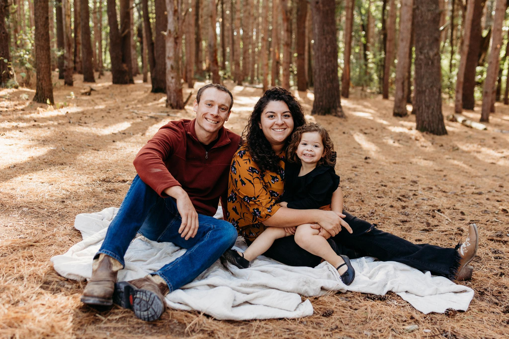

About Me
I'm Noelia Doman, a Computer Science student at Grand Valley State University with a deep passion for software development. Before returning to school, I spent nearly a decade working in the veterinary field, where I developed a strong commitment to helping others - both people and their pets. My journey back into education began when I discovered how powerful technology can be in solving real-world problems, especially in healthcare.
Now, I'm combining my technical skills with my background in animal care, aiming to build innovative solutions that can improve lives - whether that's through medical software for humans, veterinary applications, or technologies that support both. I’m excited to contribute to projects that make a meaningful difference in the world.
When not at school or work, I like to spend my time with my family. My husband is a firefighter for Grand Rapid Fire Department. We have a 3-year-old daughter and a son on the way (due in September). We enjoy boating, gardening, farming and spending our time outside. We have many animals including: dogs, a cat, cows, chickens, ducks, pigs, goats, geese and a rabbit!
Family
